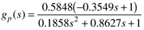

| 1: | Consider the gas pressure problem shown below. The objective of this problem is to understand (via simulation) how the tuning parameters for a PI controller affect the stability and speed of response for setpoint changes or disturbances.
The relationship between the manipulated valve position (u in deviation variables) and the pressure in the second tank (y in deviation variables) is (with a time unit of minutes)
Assume that the dynamic behavior of the pressure measurement/transmitter is characterized by a first-order lag with a time constant of 9 seconds:
Also assume that the dynamic behavior of the control valve is also characterized by a first-order lag with a time constant of 6 seconds,
where c(s) is the output from the controller and u(s) is the valve position. For P-only control, find the value of kc (via simulation) that causes a closed-loop to go unstable. Call this value kcu, and call Pu the period of oscillation (time between peaks) when the system goes unstable. These values are used in the Ziegler-Nichols closed-loop oscillation method.
Show that the value of kc sightly greater than that you obtained causes at least one root of the closed-loop characteristic equation [gCL(s)] to be positive. Find the P and PI tuning parameters on the Ziegler-Nichols closed-loop oscillations method. Compare the response of the two different controllers (P vs. PI), for step setpoint changes of 1 psig in the desired output (y). The closed-loop block diagram is shown below.
|
| 2: | Consider the following first-order + time-delay process:
Perform simulations for the process output and manipulated input for unit step changes in the setpoint.
Compare the closed-loop step response of this process using P-only control based on (i) Ziegler-Nichols closed-loop oscillations method, (ii) Ziegler-Nichols open-loop method, (iii) Cohen-Coon, and (iv) Tyreus-Luyben tuning. Compare the closed-loop step response of this process using PI control based on (i) Ziegler-Nichols closed-loop method, (ii) Ziegler-Nichols open-loop method, (iii) Cohen-Coon, and (iv) Tyreus-Luyben tuning. Compare the closed-loop step response of this process using PID control based on (i) Ziegler-Nichols closed-loop method, (ii) Ziegler-Nichols open-loop method, (iii) Cohen-Coon, and (iv) Tyreus-Luyben tuning.
Comment on the results for all of these tuning methods.
|
| 3: | Consider the process transfer function for the Van de Vusse reactor (Module 5).

Find the Ziegler-Nichols controller parameters for P, PI, and PID controllers for this process, based on the closed-loop oscillation method. Compare the responses of all three controllers to a step setpoint change. |
| 4: | Most PID controller design procedures assume that a perfect derivative controller is used. For the process transfer function used in problem 3 above, and the Ziegler-Nichols closed-loop method, compare the responses of (i) ideal PID, (ii) real PID, and (iii) PID with ideal derivative action on the process output, rather than the error. |
| 5: | Show that the following state space representation of a controller,
has the following transfer function representation:
where
|
| 6: | Consider the PID algorithm
where yf is a "filtered" value of the process output. Assuming that a first-order filter is used, with a time constant of tf, write the modeling equations (differential and algebraic) to simulate the behavior of this controller. |
| 7: | Apply (simulate) the Tyreus-Luyben parameters for PI and PID controllers to the following process
Compare these results with Cohen-Coon. Which do you recommend for implementation on a real process? |
| 8: | Find the feedback controller for an integrating process, gp(s) = kp/s, assuming a desired first-order response using the direct synthesis method.
Answer:
It is a P-only controller, with kc = 1/kpl |
| 9: | Find the feedback controller for an integrating process, gp(s) = kp/s, assuming a desired second-order response
Partial Answer:
The controller is a first-order lag. |
| 10: | Show that the direct synthesis procedure for the following process, assuming a desired first-order response, yields a PID controller
Find the PID tuning parameters if a closed-loop time constant of 5 minutes is desired. |
| 11: | For a second-order system with numerator dynamics,
find a controller that gives a first-order closed-loop response. (Hint: It will be a PID with a first-order lag.) |
| 12: | Consider the following first-order process:
If the desired closed-loop response to a setpoint change is second order with the following form,
find the feedback controller required, where a and l are adjustable tuning parameters (they are both positive). What type of controller is this? If the controller is PID form (perhaps with a lag), find each of the tuning parameters (kc, tI, tD, tF). Show that l > 0.5a is required for the controller to be stable. |
| 13: | Consider a first-order process with a desired closed-loop response that is second order. Use the direct synthesis procedure with the following specified closed-loop transfer function (which is critically damped),
to derive the controller. Perform simulations for several values of l and compare and contrast the closed-loop results with those shown in Figure 6-5. |